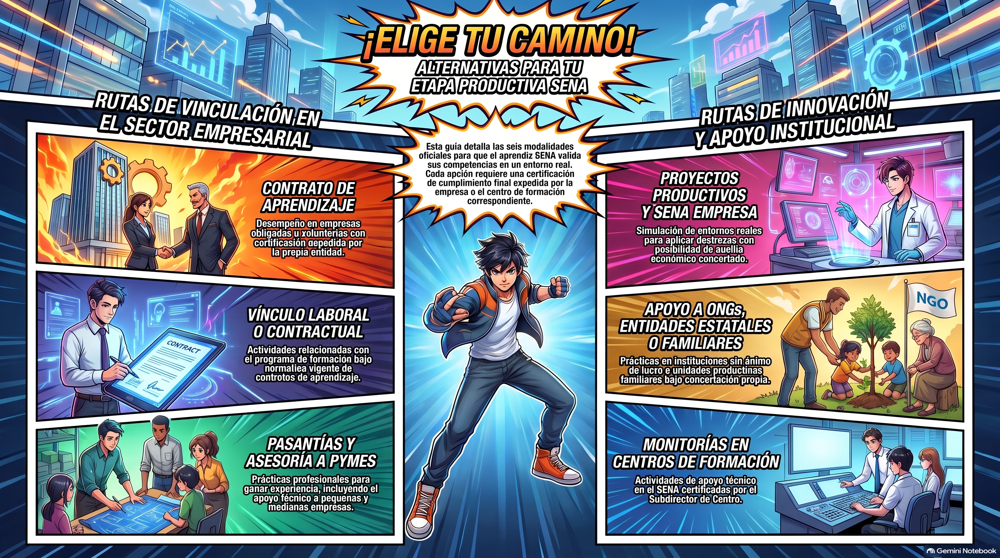

Guía de Alternativas de Etapa Productiva - SENA
Acuerdo 009 de 2024 • Guía GFPI-G-040 • 864 horas reglamentarias • Calificación mínima aprobatoria: 90%
Registro del Aprendiz
Diligencia tus datos para identificar tu registro y resultado de evaluación al momento de imprimir.
Introducción y Propósito de la Etapa Productiva
Ficha técnica operativa y marco normativo de referencia
Norma Base
Acuerdo 009 de 2024
Guía Técnica
GFPI-G-040
Intensidad Tituladas
864 horas
Ámbito
Exclusivo sector formal/institucional
Reforma Laboral
Ley 2466 de 2025
Propósito de la Etapa Productiva
La etapa productiva del programa de formación del SENA tiene por objeto que el aprendiz aplique en el entorno laboral real o simulado los conocimientos, habilidades, destrezas, actitudes y valores propuestos en el perfil de competencias del programa de formación titulada. Para programas de formación titulada (técnico y tecnólogo), la intensidad horaria estándar obligatoria de la etapa productiva corresponde a 864 horas (equivalentes a 6 meses de ejecución continua o proporcional según diseño curricular). Durante esta fase, el aprendiz consolida su transición formativo-laboral bajo supervisión institucional y coformadora, quedando proscrita cualquier asimilación informal o fuera del marco reglado por la entidad.
Las 5 Alternativas Oficiales Permitidas
Conforme al Reglamento del Aprendiz vigente, estas son las únicas 5 vías habilitadas para cumplir la etapa productiva
Contrato de Aprendizaje - Empresas Obligadas / Voluntarias
Desempeño práctico desarrollado por el aprendiz en empresas patrocinadoras obligadas o voluntarias (incluido el propio SENA), en cumplimiento de la relación especial de aprendizaje regulada por la legislación laboral colombiana.
Seguridad Social: Afiliación obligatoria a EPS y ARL a cargo exclusivamente de la empresa patrocinadora.
Vínculo / Contrato Laboral Afines al Perfil
Desempeño laboral o contractual directo del aprendiz con una empresa o empleador formal, siempre que las funciones desarrolladas guarden plena afinidad, pertinencia y correspondencia con el programa de formación titulado.
Seguridad Social: Cobertura integral (salud, pensión y ARL) a cargo del empleador.
Proyecto Productivo I+D+I / Simulación SENA
Ejecución de un proyecto aplicado en el marco de la especialidad (empresarial, I+D+i, o simulación institucional SENA proveedor) orientado a resolver una problemática real del sector productivo o tecnológico.
Seguridad Social: Afiliación obligatoria a ARL por la entidad gestora o coformadora (Decreto 055 de 2015).
Vínculo Formativo / Pasantía - Entidades / ONG / S.A.L.
Apoyo a entidades estatales, territoriales, ONG, unidades familiares o S.A.L. en actividades afines al perfil de la formación titulada, sin mediar contrato laboral estricto de aprendizaje.
Seguridad Social: Concertación voluntaria de estadía y ARL a cargo de la entidad coformadora.
Monitoría Institucional - Centros SENA
Apoyo a procesos formativos institucionales en especialidades tecnológicamente afines dentro de un Centro de Formación SENA específico, adjudicada por bienestar y comité.
Seguridad Social: Sin auxilio salarial (aplica estímulo institucional por resolución); ARL a cargo del SENA.
Paso a Paso del Proceso del Aprendiz
Ruta secuencial desde el requisito lectivo hasta la ejecución de bitácoras
Verificación de requisito lectivo (100%)
Aprobar el 100% de los resultados de aprendizaje de la etapa lectiva en SOFIA Plus y contar con afiliación activa a salud (cotizante/beneficiario o garantía institucional).
Consecución o postulación de alternativa
Obtener carta de aceptación de la empresa patrocinadora/coformadora, formalizar contrato laboral afín, aval de proyecto productivo o adjudicación de monitoría.
Radicación formal de solicitud
Radicar ante Coordinación Académica o canales oficiales del Centro de Formación la documentación soporte (carta de aceptación, certificados y soportes de ARL).
Aval del Coordinador Académico
El Coordinador Académico evalúa pertinencia, emite resolución/aval formal y registra la novedad de inicio de etapa productiva en el sistema de gestión.
Designación de instructor y formato GFPI-F-023
Se asigna instructor técnico de seguimiento con quien se suscribe el Formato de Planeación, Seguimiento y Evaluación de Etapa Productiva (GFPI-F-023).
Ejecución y entrega de 12 bitácoras quincenales
Presentar y radicar un total de 12 bitácoras quincenales debidamente firmadas por el aprendiz y el coformador/empleador para la evaluación final.
Inhabilidades e Incompatibilidades Normativas
Restricciones jurídico-pedagógicas estrictas del Reglamento del Aprendiz
Prohibición de doble rol / empresa propia
El aprendiz no puede suscribir contrato de aprendizaje, vínculo formativo o pasantía con una empresa, negocio o unidad productiva formalizada de la cual sea propietario, socio fundador, representante legal o empleador directivo. Viola la subordinación pedagógica y desnaturaliza el fin de coformación externa (Conceptos Jurídicos SENA 90914/2024 y 47942/2022).
Prohibición de duplicidad o simultaneidad irregular
Conforme al artículo 33 de la Ley 789 de 2002, está prohibida la celebración simultánea o duplicada de relaciones de aprendizaje que vulneren topes de cuota, o contratar bajo esta figura a exempleados con vínculo laboral previo idéntico en la misma empresa.
Exclusión total de economía popular/campesina
Conforme a las instrucciones específicas del manual normativo, se excluye cualquier validación bajo prácticas comunitarias, populares o CampeSENA, restringiendo las alternativas exclusivamente a las 5 vías formales descritas en este simulador.
Reglas de Complementariedad Horaria Secuencial
Si una alternativa no cubre individualmente las 864 horas exigidas, aplica la complementariedad secuencial
| Parámetro | Directriz Institucional de Acumulación |
|---|---|
| Suma de horas | Acumulación horaria entre dos alternativas coautorizadas hasta completar las 864 horas reglamentarias de la fase productiva. |
| Continuidad | No se permiten baches de inactividad no justificada superiores a 5 días hábiles entre la terminación de la alternativa A y la radicación de la alternativa B. |
| Nuevo aval académico | Cada cambio o adición de complemento exige radicación expresa de soportes y nuevo aval del Coordinador Académico en SOFIA Plus. |
| Bitácoras proporcionales | El paquete de 12 bitácoras se reajusta o distribuye proporcionalmente por bloque ejecutado bajo supervisión del instructor asignado. |
Matriz Resumen de Cobertura y Control
El cumplimiento del 100% de la etapa productiva (864 horas tituladas) requiere obligatoriamente: (1) Aval académico previo, (2) Cobertura de ARL activa desde el día 1, (3) Diligenciamiento del formato GFPI-F-023, y (4) Radicación satisfactoria de las 12 bitácoras quincenales firmadas por el coformador. El incumplimiento de bitácoras o cruce con empresa propia acarrea novedad de anulación de etapa productiva por comité de evaluación.
Video Explicativo
Video institucional sobre las alternativas de etapa productiva del SENA
Infografía de Etapa Productiva
Resumen visual de las 5 alternativas y la ruta del proceso

Coloca el archivo Guía_de_la_etapa_productiva.png en la misma carpeta que este archivo HTML para visualizarlo aquí.Evaluación de Conocimientos
Pon a prueba lo aprendido sobre las alternativas y el proceso de etapa productiva del SENA. Calificación mínima aprobatoria: 90%
A. Selección múltiple (única respuesta)
Elige la única opción correcta en cada pregunta. (5 pts c/u)
1. ¿Cuántas horas comprende la etapa productiva para programas titulados (técnico y tecnólogo)?
2. ¿Cuál es la norma base que regula las alternativas de etapa productiva?
3. ¿Cuál es el código de la guía técnica que rige la etapa productiva?
4. ¿Cuántas alternativas oficiales existen para cumplir la etapa productiva?
5. ¿Qué formato se usa para la planeación, seguimiento y evaluación de la etapa productiva?
6. ¿Cuántas bitácoras quincenales debe presentar el aprendiz durante la etapa productiva?
7. ¿Qué requisito debe cumplir el aprendiz antes de iniciar la etapa productiva?
8. ¿Quién es el encargado de expedir la constancia de cumplimiento a satisfacción cuando el aprendiz elige la modalidad de "Participación en Proyectos Productivos" (como SENA Empresa o SENA proveedor SENA)?
B. Relaciona la alternativa con el responsable de la afiliación a ARL/seguridad social (listas desplegables)
Selecciona el responsable correcto para cada alternativa. (8 pts c/u)
Alternativa 1: Contrato de aprendizaje (empresas obligadas/voluntarias)
Alternativa 2: Vínculo / contrato laboral afines al perfil
Alternativa 3: Proyecto productivo I+D+I / Simulación SENA
Alternativa 4: Vínculo formativo / Pasantía (Entidades / ONG / S.A.L.)
Alternativa 5: Monitoría institucional (Centros SENA)
C. Selecciona la tarjeta con la respuesta correcta
Toca la tarjeta que consideres correcta para cada pregunta. (4 pts c/u)
1. ¿Qué alternativa corresponde a "Apoyo a procesos formativos institucionales... adjudicada por bienestar y comité"?
2. ¿Qué conceptos jurídicos SENA prohíben realizar la etapa productiva en empresa propia?
3. ¿Cuál es el máximo de días hábiles de inactividad permitido entre la alternativa A y la alternativa B en la complementariedad horaria?
4. ¿Quién emite el aval formal y registra la novedad de inicio de etapa productiva en el sistema de gestión?
5. ¿Qué se excluye totalmente como alternativa válida según el manual normativo?
Desglose Detallado de Calificación por Competencia
| Dimensión Normativa | Puntos Posibles | Puntos Obtenidos | Cumplimiento | Estado |
|---|
Dashboard de Resultados
Resumen visual del desempeño en la evaluación • Aprobación mínima: 90%
% de Cumplimiento por Bloque
Puntaje Global
Sin datos suficientes. Ve a la pestaña "Evaluación", responde las preguntas y haz clic en "Calcular Resultado" para ver aquí tu dashboard.